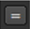

In the RotoPaint properties panel, you can select one output channel or many to indicate the channels where the results of your changes should be stored.
| 1. | From the output field, select the layer containing the channels you want to use. By default, rgba is selected, and the red, green, blue, and alpha channels are checked on the right. |
| 2. | Uncheck any channels that you don’t want to process. The node processes all those you leave checked. For more information on selecting channels, see Calling Channels. |
| 3. | If you want to, you can use the output mask dropdown menu to select a channel where RotoPaint outputs a mask for what it rendered. By default, the channel is none, but if you select a channel in the menu, the output mask box is automatically checked. |
The mask can be useful, for example, if you need to apply grain to the areas you've painted, but you don’t want to double up the grain in other areas.
By default, the output mask control is hidden, but you can display it by clicking on the black triangle above color.
| 4. | If necessary, select your premultiply value. |
Premultiply multiplies the selected input channels with a mask representing the paint strokes and shapes. For example, where there are no paint strokes or shapes (the paint matte is black or empty) the input channels are set to black, and where the paint strokes or shapes are opaque (the paint matte is white or full) the input channels keep their full value.
Note that selecting rgba premultiplies the alpha against itself (a*a). If you don’t want this to happen, set premultiply to rgb instead.
TIP: You can use the Link Menu  to link the channel controls with other controls. For more information, see Linking Channels Using the Link Menu.
| 5. | From the clip to dropdown menu, select how you want to restrict the output image: |
• no clip - Do not restrict the output image.
• bbox - Restrict the output image to the incoming bounding box.
• format - Restrict the output image to the incoming format area (the default).
• union bbox+format - Restrict the output image to a combination of the bounding box and the incoming format area.
• intersect bbox+format - Restrict the output image to an intersection of the bounding box and incoming format area.
You can also check the Replace box if you want to clear the channels to black before drawing into them. You might find Replace useful, for instance, if you’re creating a mask in the alpha channel, but the incoming image already has an alpha channel which you want to throw away.
| 6. | If you haven’t connected an input to RotoPaint, select your format value. This is the format which the node should output in the absence of any available input format. If an input is connected, this control has no effect. |
By default, the format control is hidden, but you can display it by clicking on the black triangle above color.
|
|